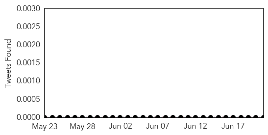
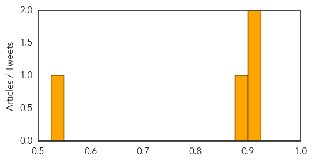
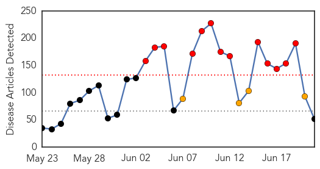
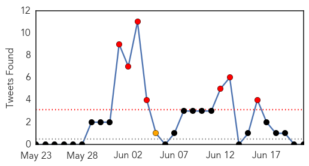
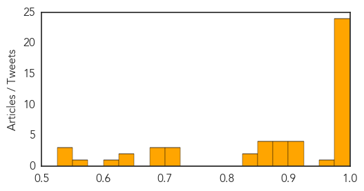

Bubonic Plague
30-Day Web Trend
30-Day Twitter Trend
0 alerts, 0 warnings

Article Locations
Article Confidences
Top Articles:
Top Tweets:
-
No tweets found for Jun 21, 2015
Unknown
30-Day Web Trend
13 alerts, 4 warnings

30-Day Twitter Trend
7 alerts, 1 warnings

Article Locations

Article Confidences
Top Articles:
- 1.000
- South Korea announces three new MERS cases
- 0.999
- Country reports three new cases
- 0.999
- South Korea Reports 3 New MERS Cases
- 0.999
- 3 new cases, 1 death added to MERS tally
- 0.999
- South Korea reports three new MERS cases
- 0.999
- South Korea reports three new #MERS cases
- 0.999
- South Korea: Three New MERS Cases
- 0.999
- (2nd LD) S. Korea reports 3 new cases of MERS, but no additional death
- 0.998
- S Korea reports no new MERS cases
- 0.998
- S Korea reports 3 new MERS cases
- 0.998
- S. Korea reports three new MERS cases
- 0.998
- Two medical staff among three diagnosed with Mers in S Korea
- 0.998
- The World On Arirang
- 0.997
- Number of MERS cases rises to 169 in South Korea
- 0.996
- South Korea reports 15th MERS death, 7 new cases
- 0.996
- 3 new MERS cases reported
- 0.996
- No New MERS Cases In South Korea And Thailand; Outbreak Soon To Be Under Control?
- 0.995
- S. Korea reports no new MERS cases for first time in 16 days
- 0.995
- 3 More Cases of MERS Reported in S Korea
- 0.990
- Another Samsung doctor infected by MERS in SKorea
- 0.988
- S. Korea reports three new MERS cases
- 0.982
- No MERS outbreak in Oman: health ministry
- 0.981
- KBS World Radio
- 0.978
- Ministry: 175 people exposed to MERS in Thailand - Regional
- 0.968
- Kingdom bracing for MERS after Thai case, National, Phnom Penh Post
- 0.922
- US experts to visit Korea for MERS cooperation
- 0.917
- Chicago Tribune
- 0.910
- SGGP English Edition- Health Minister supervises prevention task in HCMC
- 0.902
- First lawsuit filed over gov't handling of MERS
- 0.894
- Month of MERS changes pattern of daily life
- 0.892
- MERS inevitable in Singapore, minister says
- 0.890
- 25th MERS Death Confirmed in S Korea
- 0.880
- Report on MERS outbreak aims to explain rapid spread
- 0.869
- Growth of foreigners' trip cancellations tumbles amid waning MERS
- 0.867
- Oman Air ‘not impacted’ by Mers caseTravel & Tourism
- 0.866
- Tick bite prevention techniques help decrease number of patients diagnosed with Rocky Mountain spotted fever
- 0.852
- Growth of foreigners' trip cancellations tumbles amid waning MERS
- 0.848
- MERS crisis shows South Korea has failed to learn from past errors
- 0.828
- June 21 local headline news
- 0.724
- MERS dents tourism on Jeju Island
- 0.722
- S. Korea sees signs of MERS scare subsiding
- 0.704
- Cebu Lifestyle, The Freeman Sections, The Freeman
- 0.697
- S. Korea sees signs of MERS scare subsiding
- 0.684
- Focus on cancer prevention, govt told
- 0.681
- KUNA : Kuwait makes headway in combat against epidemics
- 0.635
- Antibiotics Prevent Patients From Surgery Caused by Appendicitis
- 0.625
- Deadly Plague Takes life of High School Teen Athlete in Colorado
- 0.606
- Bangkok Post
- 0.567
- Beware out there: Ticks, bats can carry diseases -- Port Angeles Port Townsend Sequim Forks Jefferson County Clallam County Olympic Peninsula Daily NEWS
- 0.540
- What is Reproductive Health Kit?
Showing top 50 articles...
Top Tweets:
-
No tweets found for Jun 21, 2015